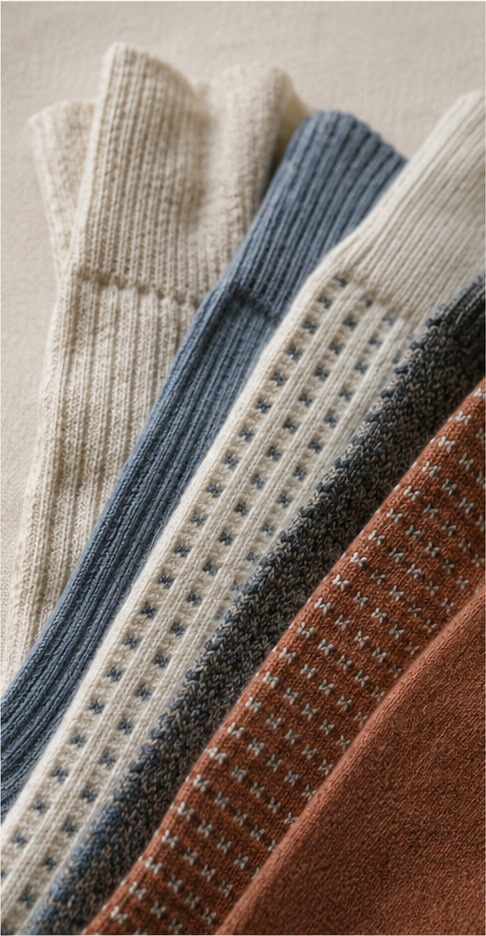
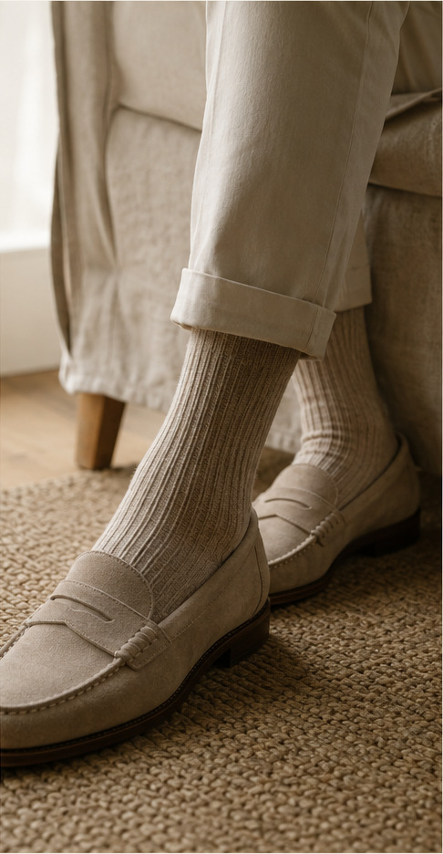

THE LONG READ
Socks Journal
Twelve complete guides for understanding, choosing and caring for socks.
 GUIDE 01 · 7 MIN
GUIDE 01 · 7 MINChoosing Everyday Socks
A practical framework for warmth, proportion, movement and lasting usefulness.
 GUIDE 02 · 8 MIN
GUIDE 02 · 8 MINUnderstanding Socks Fit
How cuff pressure, heel placement and toe room shape comfort.

GUIDE 03 · 9 MINA Guide to Wool Socks
Fibre, weave, weight and construction explained in useful terms.
 GUIDE 04 · 10 MIN
GUIDE 04 · 10 MINDress Sock Field Notes
Why the dress sock remains adaptable across seasons and wardrobes.

GUIDE 05 · 11 MINThe Modern Wool Sock Guide
Wool blends, cushioning and temperature balance without the jargon.
 GUIDE 06 · 7 MIN
GUIDE 06 · 7 MINThe Patterned Sock Story
From practical liner to versatile modern familiar wardrobe essential.
GUIDE 07 · 8 MINBuilding a Layering System
Thin, cushioned and insulating knits for different shoes and seasons.
GUIDE 08 · 9 MINCaring for Wool Socks
Brushing, airing, storage and responsible cleaning for longer wear.
GUIDE 09 · 10 MINAn Socks Colour Guide
Charcoal, navy, camel and olive as flexible wardrobe anchors.
GUIDE 10 · 11 MINA Small Socks Wardrobe
A considered four-piece approach built around real routines.
GUIDE 11 · 7 MINTechnical Fabric Basics
Breathability, water resistance and durability explained clearly.
GUIDE 12 · 8 MINBuying Vintage Socks
How to assess condition, construction, alterations and useful character.